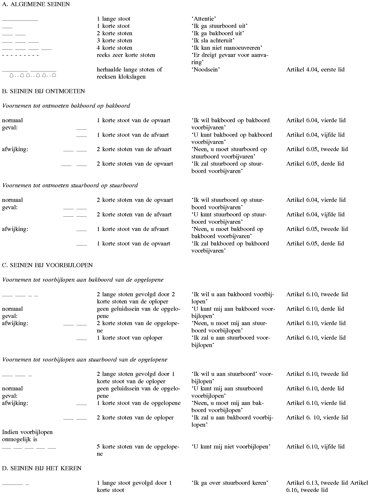
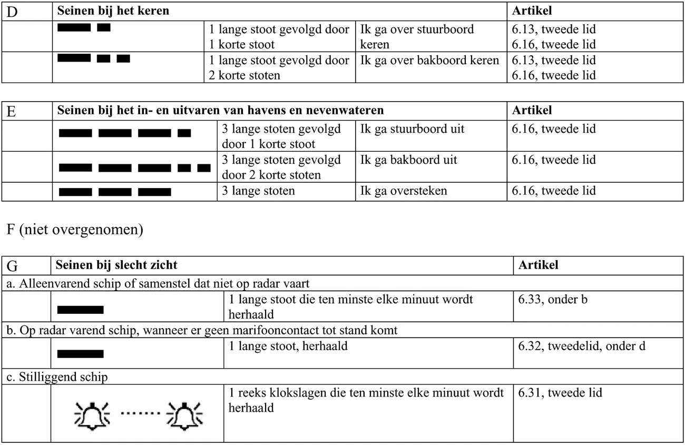

Bijlage 6 Geluidsseinen
Rijnvaartpolitiereglement 1995
Opmerking vooraf:
Met uitzondering van klokslagen en van reeksen van klokslagen en van het sein, bestaande uit drie zonder onderbreking op elkaar volgende tonen van verschillende toonhoogte, worden de geluidsseinen gevormd door het geven van één of meer opeenvolgende stoten met de volgende kenmerken:
- korte stoot: stoot, durende ongeveer één seconde;
- lange stoot: stoot, durende ongeveer vier seconden.
De tijdruimte tussen twee opeenvolgende stoten bedraagt ongeveer één seconde.
Het sein "een reeks zeer korte stoten" wordt evenwel gevormd door een reeks van ten minste zes stoten, elk durende een kwart seconde, waarbij de tijdruimte tussen opeenvolgende stoten ongeveer een kwart seconde bedraagt.
Een reeks klokslagen moet ongeveer vier seconden duren. In plaats daarvan kunnen ook reeksen slagen van metaal op metaal worden gegeven.

